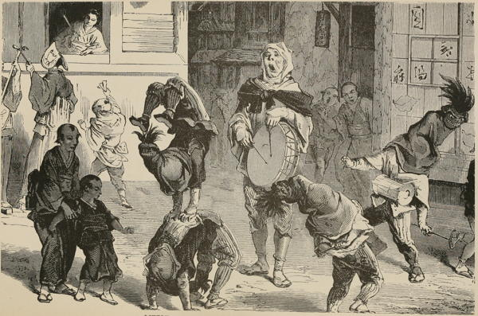

“Little jugglers in the streets of Yedo”
Japan in Our Day (1872)
Last night we went to see Japanese conjurers at home. Very clever their performance was; beginning with one of the gentlemen coming forward and, addressing our worships, introducing his young friend, though ‘indeed he was only a bungler, to our honourable notice,’ and making a long speech, on his heels, with head now and then bent to the ground, in classical Japanese, which an English friend translated for our benefit. The ‘bungler’ did marvellous antics, lying on his back with his toes in the air; tossing boys out of barrels, opening and shutting huge umbrellas, and spinning large Japanese screens on one toe. Several English children were present, and, just as the conjurer was giving a most vigorous kick sending an umbrella into space, the breathless silence of the audience was broken by a little voice exclaiming, ‘Oh, mama! you couldn’t do that.’ It was impossible to keep one’s countenance, though the poor ‘mama’ looked rather confused. But the top-spinning was delightful. The tops, like living things, followed the conjurer’s fan and never thought of stopping till ordered to, but kept spinning anywhere on the top of each other, on the edge of his paper fan, and at last one spun on the wick of a lighted candle till it burst and made a miniature Catherine wheel. Then, at a word, jets of water sprang from the tops, from the sword blade, from the conjurer’s own head and shoulders, and from the lamp, till really it seemed as if the room would be inundated.
Top-spinning and kite-flying are old national sports here, but, like everything else ‘old,’ are going out of fashion.
Journal of a Lady’s Travels Round the World (1883)
A very common form of entertainment is the story-teller, who, with no “properties” except a desk and fan, will hold his audience enthralled with a tale of woe and horror, or convulsed with laughter over his depiction of the comic aspects of human life. The desk serves to hold the few manuscript notes with which he comes provided, and the cup of tea or water which his eloquence claims as its best reward. The fan is brought down at critical points in the narration with telling raps upon the desk.
... He generally has his special lecture-hall near his own residence, where, for a very modest fee, people may come on any evening in the week and spend a few hours with amusement and pleasure.
I will take my reader with me to one of these yose, as they are called. It is situated in a wide thoroughfare near the busy part of the town, at a place where four roads meet. Opposite to it is a great temple, beyond that a very large and busy printing establishment; the rest of the neighbourhood is taken up with the houses of the middle class and poor and with the numerous little shops which form so conspicuous a feature of our Tokyo streets. It is a two-storied house: downstairs are the dwelling-rooms of the family and a reception-room for visitors. The whole of the upstairs is one big matted room, with a little raised daïs at one end to accommodate the story-teller and his desk. A peculiar paper lantern at the front door calls our attention to the entertainment which is being given within, and we resolve to enter.
At the entrance a stalwart attendant—he may be a “chucker out” for aught we know—takes charge of our boots, umbrellas, and other impedimenta, directs us to the counter where the story-teller’s wife sits at the receipt of custom, and shows us up the chicken-ladder which in Japanese houses does duty for a staircase. We follow him, wondering how we shall manage to come down again in the dim light of the poor oil-lamp that is hanging there, and are ushered to our seats which we take on the floor, but with a wall or pillar behind us as a support to our poor weak backs. The attendant brings us cushions to sit upon and a little fire-box for warming our hands and lighting our cigarettes, and we make ourselves comfortable till the entertainment begins.
The room was half-full when we entered, but new arrivals are constantly coming in, and the audience is beginning to be impatient. The story-teller, however, refuses to be hurried—he is waiting for a few more guests to take their seats, but he understands the natural impatience of the audience, and one of his daughters or a pupil it may be, for even story-telling requires an apprenticeship—is told off to keep the company in good humour with a popular air played on the samisen or koto.
When the hall is full, he begins. He has a large répertoire of stories to draw from, for Japanese history is mostly made of anecdotes, and a Japanese audience is never tired of hearing the histories of the national heroes. The stories need not, however, be confined to Japanese subjects. Western tales of adventure or heroism are often introduced in Japanese garb, and one of the most popular of modern story-tellers is an Englishman, born and bred in this country, whose knowledge of his mother-language enables him to draw upon a cycle of narratives and legends which are inaccessible to his Japanese rivals.
The stories are not always fit for ears polite, for the Japanese, with all his sense of decorum, has a marvellous knack in some things of calling a spade a spade, and prefers outspoken names to veiled innuendoes. Sometimes the tales are pathetic, sometimes gruesome, and the story-teller, who is always somewhat of a contortionist, makes his facial expression suit the character of his tale. The story does not in every case carry its appropriate moral with it, for the story-teller does not set up to be a preacher; but it is often humorous, and its audience goes home with laughing hearts, which is something in this vale of woe.
Every-day Japan (1909)
We were ... not disappointed by the juggler; he arrived late in the afternoon with attendants, wearing the apparatus indicative of his calling, and proceeded to convert Lord Elgin’s sitting-room into a theatre for his operations. The spectators were ranged on seats in the garden. The conjuror was a venerable old man with a keen eye, a handsome intelligent face, and a long grey beard, the only instance I saw in the country of a countenance so adorned. His dress was very similar to that usually worn by the magicians of Egypt, and was well calculated to increase his imposing aspect. Its ample folds and flowing sleeves, moreover, afforded him many facilities in the exercise of his sleights of hand. Those tricks which were dependent merely on prestidigitation were certainly not superior to the ordinary tricks of conjurors in other countries. He produced inexhaustible substances out of very shallow boxes, which became unaccountably full and empty, and magically converted a small quantity of cotton which he had tapped into an egg upon his fan into a number of very substantial umbrellas; but these were the mere tricks of the trade, the excellence of which could best be appreciated by professional artists. That about which there was no trick, but which struck us as exhibiting the most singular display of skill, was the famous performance with artificial butterflies. These were made in the simplest manner. A sheet of paper torn into slips supplied all the materials. By tearing these again into small oblong pieces, and twisting them in the centre, they were made roughly to represent the body and two wings. Two of these impromptu butterflies were then puffed into the air, and kept in suspense there by the action of the fan beneath them. This required to be most carefully and scientifically applied, so as not only to prevent their separating, but to guide their motions in any required direction. Now they would flutter aloft as though chasing each other in playful dalliance, at one moment twine together, at another so far apart that it seemed a mystery how the same fan could act upon both. Then they would settle together upon the leaf of a neighbouring shrub, or, more curious still, alight gently on the edge of the fan itself. The intense attention which this performance required on the part of the operator, proved that, though to the spectators the matter seemed easy enough, it called forth the exercise of all the faculties, and involved no doubt a long course of practice before proficiency could be attained.
During the whole period of his performances, the wizard, after the manner of that fraternity, never ceased talking; and, to judge by the merriment he excited among the Commissioners, and the extent to which Higo was tickled, his remarks must have been of a highly facetious character, though he maintained himself the most imperturbable gravity throughout.
Narrative of the Earl of Elgin’s Mission to China and Japan (1859)
After the dinner and the dances came some of the renowned jugglers of Japan, of whom one very old, very stout, very testy, and very clever representative achieved great distinction, and received great applause. I shall only name one or two of his successes. One was the taking of a small glass globe, about four inches in diameter, and putting a little water into it, and then, without any means that we could see or divine, causing this globe first to become full, and then to play like a fountain, which rose and fell at his command, or as he played upon it with his fan. He also caused the water apparently to play upwards from the bowl through his fan, through any part of it as he pleased, and also to assume various inclined directions, and, in a word, to do whatever he desired. Another of his tricks was to produce a number of paper lanterns, complete, with candles and suspension loops, from a bowl of water, and to cause them to become lighted when he pleased after they had passed from his hand and had been hung up at a distance of several feet from him. One of them would not light, being, he said, too wet; but after a few minutes had elapsed, he commanded it to become lighted, and it instantaneously became so.
Japan: Its History, Traditions, and Religions (1880)
The important Shinto shrine of Wakamiya ... was made very interesting to us by the circumstance that the priests were good enough to have a religious dance performed for our instruction. The dancers were three young virgins dressed in red crape, with white robes over, and adorned with two large bunches of artificial flowers standing out like floral horns from their foreheads, balanced by two gilt ornaments projecting backwards from the neck. Three surpliced young men, gifted with a great power of remaining steady for a long time upon one note, led the dance with vocal and instrumental music. Like all Japanese dances, the present one was entirely unlike everything that passes for dancing in Europe, consisting rather of posturing, attitudinising, advancing and retreating, and other such movements, usually conducted very slowly. In the course of the dance the girls each made use of a bunch of bells with silk bands depending from it, as usual in the Shinto dances—in imitation, doubtless, of the goddess Uzumé, who, according to tradition, employed in her dancing small bells suspended from a bamboo cane. The dance was in some respects pretty, as all graceful movements of well-trained young girls are sure to be; but I hope it had in it some profounder religious significance than I could discern, for in other respects it was not to be considered inspiriting.
Japan: Its History, Traditions, and Religions (1880)
We ... went to examine the shows in the fair [in Asakusa, Edo]. The discordant jangle of musical instruments is resorted to in Japan, as in England, to entice the passers-by into entering the mysterious precincts. We could not resist the inducement. ...
Immediately on entering, a gorgeously decorated junk, almost the size of nature, gaily freighted with a pleasure-party, was sailing over an ocean so violently agitated that only one result could be anticipated in real life: but the junk was merely a sort of scene to conceal the exhibition behind it. This consisted of a series of groups of figures carved in wood the size of life, and as cleverly coloured as Madame Tussaud’s wax-works. No. 1 was a group of old men, in which decrepitude and senility of countenance were admirably portrayed. No. 2, a group of young Japanese Hebes dressing, and a country clodhopper rooted to the spot in ecstasy at the contemplation of their charms. The humour of this tableau consisted in an appearance of unconsciousness on the part of the ladies. No. 3 was a princess in magnificent array, seated on a dais, watching her maids of honour going through divers gymnastic performances: one of them was in a position more agile than graceful, her occupation being, while extended on her back, to keep a ball dancing in the air on the soles of her feet. The attitudes, which were extremely difficult to represent correctly in wood carving, were executed with wonderful spirit and truth to nature. No. 4 was a group of men quarrelling over sakee; the fragments of the cups, dashed to pieces in their anger, lay strewn about. Upon the countenances of two of the men the expression of ungovernable rage was well depicted. The other was leaning back and laughing immoderately. No. 5 was a group of women bathing in the sea; one of them had been caught in the folds of a cuttle-fish, the others, in alarm, were escaping, leaving their companion to her fate. The cuttle-fish was represented on a huge scale, its eyes, eyelids, and mouth being made to move simultaneously by a man inside the head.
I have given a somewhat detailed account of this “show,” as it displayed a good deal of artistic talent. The subjects were characteristic, and it is a fair sample of the perfection at which the Japanese have arrived even in the lowest walks of art.
Narrative of the Earl of Elgin’s Mission to China and Japan (1859)
At one o’clock we were invited to witness a display of day fireworks consisting of rockets, which after explosion, disclosed, not beautiful coloured stars, but Japanese paper lanterns, birds, butterflies, parachutes, red balls, and even ladies’ dresses, which expanded themselves and floated away.
Impressions of a Journey Round the World (1897)
◀ MusicWrestling ▶